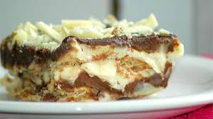

Pavê de baunilha e chocolate

Creme de baunilha:
- 1 lata de leite condensado
- 2 latas de leite integral (use a mesma lata como medida)
- 3 gemas
- 2 colheres (sopa) de manteiga
- 1 colher (sopa) de amido de milho dissolvido em 1/2 xícara de leite
- 2 colheres (sopa) de essência de baunilha
- 1 lata de creme de leite
Ganache:
- 400 g de chocolate meio-amargo ou blend
- 400 g de creme de leite
Pavê:
- 400 g de bolacha maizena
- 1 xícara de leite
- 2 colheres (sopa) de chocolate em pó ou achocolatado
- 100 g de chocolate branco (para decorar)
- Junte todos os ingredientes, exceto o creme de leite.
- Leve ao fogo médio, mexendo sempre - é importante mexer durante todo o processo de cozimento para não empelotar.
- Quando aparecer o fundo da panela, desligue o fogo, junte o creme de leite e mexa mais um pouco, até incorporar.
- Deixe na panela para amornar. Não precisa colocar filme plástico em cima, se formar película é só mexer bem antes de usar.
- Para que o creme não fique com cheiro de ovo, sugiro que as gemas sejam passadas pela peneira - fure-as e deixe que "escoreguem" para dentro da panela, vai sobrar apenas a película, que deve ser descartada.
Baunilha:
Ganache
- Derreta o chocolate em banho-maria ou no micro-ondas, junte o creme de leite e mexa bem até obter um creme lisinho e brilhante.
- Se escolher o banho-maria, tome cuidado para não pingar água no chocolate.
- No micro-ondas, ajuste a potência média e derreta de minuto em minuto - não deixe em potência alta para não correr o risco de queimar o chocolate.
- O meio-amargo combina perfeitamente com a doçura do creme de baunilha. Se não gosta do meio-amargo, escolha um blend, pois o chocolate ao leite pode deixar a sobremesa doce demais.
- Ao preparar ganache, use sempre chocolate e creme de leite na mesma proporção - não tem como errar.
- E, finalmente, ganache pode ser conservada na geladeira, em pote de vidro bem fechado, por até um mês. É só deixar em temperatura ambiente uma hora antes e mexer muito bem na hora de usar, para que volte a ser um creme liso e brilhante. Se mesmo mexendo a ganache ficar espessa, esquente um pouco de creme de leite, junte ao chocolate e volte a mexer.
- Misture o leite e o chocolate para molhar as bolachas.
- Alterne camadas na seguinte ordem: creme de baunilha, bolacha, ganache, creme de baunilha, bolacha, ganache, creme de baunilha, bolacha, creme de baunilha e ganache.
- Note que na última etapa não tem camada de bolacha — assim o topo do pavê fica mais "molhadinho".
- Com a faca, quebre o chocolate branco grosseiramente e coloque por cima. Leve à geladeira e sirva no dia seguinte. Para servir, separe com uma faca e retire com espátula de bolo. Fica bonito no prato. Rende uma travessa de vidro retangular de tamanho aproximado 30x18x5 cm.